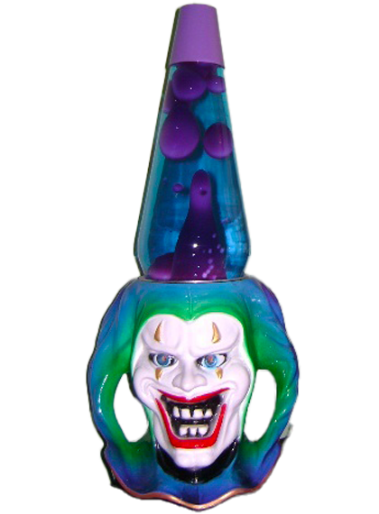

«Dopo un po' il culo s'è messo a parlare da solo. Lui cominciava senza essersi preparato niente e il suo culo improvvisava e ogni volta gli rilanciava le battute.
Poi gli sono spuntati dei gancini curvi che raspavano come denti e ha cominciato a mangiare. Lui all'inizio pensava che fosse una figata e ci ha costruito intorno il suo numero, ma il buco del culo si è mangiato i calzoni e ha cominciato a parlare per la strada, gridava che voleva la parità dei diritti. Si sbronzava pure e si prendeva certe sbornie tristi della madonna frignando che nessuno gli voleva bene e poi voleva essere baciato come qualsiasi altra bocca. Alla fine parlava sempre, giorno e notte, lo si sentiva a isolati di distanza, lui gli gridava di chiudere il becco, lo prendeva a pugni, ci ficcava dentro le candele, ma non serviva a un tubo e il buco del culo gli diceva:

"Alla fine sarai tu a chiudere il becco, non io. Perché non c'è più bisogno di te. Adesso posso parlare, mangiare e cagare":
Poi ha cominciato a svegliarsi al mattino con una gelatina trasparente simile alla coda di un girino sulla bocca. Gli scienziati lo chiamano T.n-D., Tessuto non-Differenziato, e può crescere ovunque nel corpo umano. Lui se la strappava dalla bocca e dei lembi gli rimanevano appiccicati alle mani come nafta che ha preso fuoco e lì cresceva, cresceva dappertutto finché non ne cadeva qualche goccia. Così alla fine la bocca rimase completamente sigillata, e la testa si sarebbe staccata spontaneamente a eccezione degli occhi. L'unica cosa che il buco del culo non poteva fare era vedere. Per farlo aveva bisogno degli occhi. »